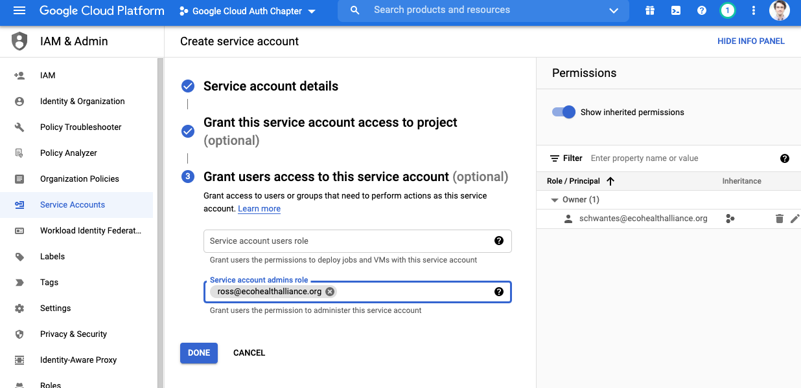
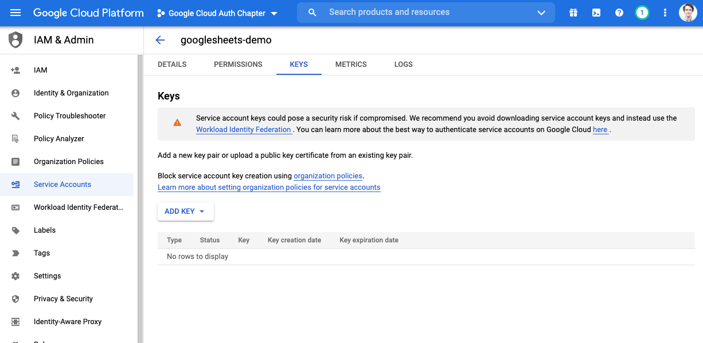

15 Google Authorization and R
IMPORTANT DO NOT ADD SENSITIVE FILES TO A GITHUB REPO UNTIL THEY ARE ENCRYPTED!
EcoHealth Alliance sometimes uses Google Drive, and Google Sheets in particular, to store and collaborate on data. Working with Google Drive-based files in R is relatively painless thanks to the googledrive, googlesheets4, and gargle packages.
What is less straightforward is working with drive based files without having to manually authenticate your identity. In this chapter, we will walk through the process of creating credentials with API access that can be used in your R project or package. Ultimately, this could allow you to fully automate your Google-centric data pipelines.
15.1 The basic overview:
- Create or store something (sheet, csv, doc, etc.) in Google drive
- Create a Google Cloud project to manage Google services
- Enable the appropriate APIs for the project so it can access things like Drive and Sheets.
- Create a service account so that you can access the APIs via credentials from R
- Encrypt credentials then add them to your R project so that you can still use
git-based workflows without leaking access to your service account - Share Google-based resources with the service account and check that credentials work as expected from R
- Add an encryption key to Github as an environment variable so that R can access the resources in automated workflows
15.2 Key Terms
- Authentication - Confirms the identity of an entity
- Authorization - Permits an entity to do something
- Auth - shorthand for authentication or authorization
- Key or Token- Computer-generated credentials that allow for authorization and authentication. In the R-Google universe key and token are synonyms, though not all services use this way, at at times okens and keys are communicated over the web using different method. You will see these terms used interchangeably in tutorials.
- Symmetric encryption - A type of encryption that uses a single key to encrypt and decrypt an object
- Asymmetric encryption - A type of encryption that uses public and private keys to encrypt and decrypt an object
- Environment variable - A value stored in a computer’s system environment. In R, this generally means values stored in the
.Renvironfile, which can be brought into your project usingSys.getenv("Variable_Name")and are very useful for storing sensitive information like tokens and keys. - Service - Functionality provided by another system i.e. serving data via an API.
- GCP - Google cloud platform. Web services from Google.
15.3 Before we start:
Note: The preferred method for adding encryption to projects is via git-crypt. See chapter 16 for more on git-crypt.
Credit: This chapter largely follows the
non-interactive auth vignette from the Gargle R package, but diverges for package and non-package focused projects.
What about Billing?: Good question. This is not an issue for Google Sheets or Drive APIs but you do need a linked billing account for BigQuery and Maps APIs. If you’re new to GCP as of 29 Sept 2021 you get $300 of credits in the Free Tier. If you use the $300 in credits GCP will ask for consent before billing. Check with the Data Librarian about using and billing arrangements beyond this.
15.4 Setup encryption tools on your machine
See chapter 16. This process will take ~30 mins and involves using the command line.
15.5 Enable git-crypt on your repository
Enabling git-crypt requires your code to be stored in a git-backed repository. See chapter 9 for setting up git repositories.
Enabling git-crypt happens from the command line. You can access the command line directly in Rstudio. If you use rstudio projects and the command line in Rstudio, then the terminal should open in the repo you want to encrypt.
In the command line run:
# check that you are in the directory with the repo
pwd
## /path/to/repo-i-want-to-encrypt
# if you're in the wrong directory, use cd to navigate to the correct repo
# cd /path/to/repo-i-want-to-encrypt
git-crypt init
Next you want to tell git-crypt which files should be encrypted. To do this, create a file in the top level directory of your repo called .gitattributes. Here you will list the files and folders you would like to encrypt. Each item should be placed a on separate line. To learn more about pattern matching in the .gitattributes file, see the git-crypt read.me and gitignore manual
Your .gitattributes file might look something like this:
.env filter=git-crypt diff=git-crypt
auth/** filter=git-crypt diff=git-crypt
.gitattributes !filter !diff
The .env file will be used to store environment variables and the auth/ folder will be used to store keys. Do NOT encrypt the .gitattributes file. It maybe a good idea to add your google auth key explicitly to the .gitattributes file using this format **/mySecretKey.json so that the key is encrypted independent of the directory it is in.
Next add yourself and other users who will require access to the encrypted files to the repo. The encryption chapter encryption in the handbook details how to add contributors to the repo.
Finally, you will have to set up a symmetric key for github actions to use. This key can always be regenerated so there is no reason to store it. Additional detail can be found in the encryption chapter here.
First, add the git-crypt key to your .gitignore so you don’t accidentally commit it to the repo.
.Rproj.user
.Rhistory
.Rdata
.httr-oauth
.DS_Store
inst/.DS_Store
git_crypt_key.key
In the command line run:
# create the symmetic key
git-crypt export-key git_crypt_key.key
# convert it from binary to bas64 so github can use it
# the file's contents can now be pasted into a github secret
# environment variable
cat git_crypt_key.key | base64 | pbcopy
Paste the key into Github’s secret environment variable field as GIT_CRYPT_KEY64.
Now delete the key file:
# doesn't have to be done in terminal but you've already got it open
rm -i git_crypt_key.keyYou have now setup asymmetric encryption for human users and symmetric encryption for automations. The next steps involve getting the files you want to encrypt.
15.6 Setting up non-interactive authentication for Google sheets
In this section, we will walk through setting up credentials that can be used in R to access Google sheets without manual authentication. To achieve non-interactive authorization, we want to either provide a token directly to a service or make a token discoverable for a service. A token is essentially a long password, designed to be exchanged by machines but too long and complexly formatted to be used by people, and often time-limited. Remember that tokens, secrets, and API keys should be stored in a secure fashion (NOT stored in the text of your code or in unencrypted files).
We are going to follow the recommended (as of 29 September 2021) strategy of providing a service account key directly to handle authorization. A newer approach called “workload identity federation†exists as of writing but is not fully implemented in the gargle package.
15.6.1 Create a Google cloud platform project
“Google Cloud projects form the basis for creating, enabling, and using all Google Cloud services including managing APIs, enabling billing, adding and removing collaborators, and managing permissions for Google Cloud resources.†- GCP Docs
We will use a GCP project to access the Google sheets API via a service account. You do not need a profound understanding of GCP projects to setup a service account.
- Setup/view your Google cloud account
- Create a project on Google cloud to hold your credentials


- The GCP console is your destination for monitoring and modifying your projects
15.6.2 Enable APIs
GCP Projects are centered on the idea that a single project will contain a single application. In our case, the application we are creating relies on the Google Sheets API. You can enable API’s for our application to access via the APIs & Services menu item.
- In the left side menu, navigate to APIs & Services > Library

- Choose your api of interest. For this example it is Google sheets.

- Enable the api of interest. If you need to enable more API’s later you can always come back.

15.6.3 Create a Service Account
Service accounts allow applications, like the GCP project we make, to access certain resources they need via authorized API calls. The service account’s access can be limited such that it can only access specific resources in a certain way.
Importantly, service accounts are not part of the EHA workspace domain. You have to manually share resources like Google sheets with a service account even if you have provided domain-level access.
- Navigate back to your project homepage
- In the left sidebar go to IAM & Admin > Service Accounts

- Click create service account
- Give it a good name and description

- For Google sheets, we do not need to assign our account service a role
- Roles can be established to perform tests and otherwise manage the service but are not necessary
- Also not necessary to grant user access for this example
- You may have a need for this with more complicated services
- It may also be a good idea to get some redundancy in your workflow 
15.6.4 Create a Key for your service account
Keys for Google service accounts are stored in JSON files. Remember that this key will hold very sensitive information and we should treat it like a username and password combo.
Click on the appropriate item in the service accounts table. Notice that it says no key.

Click on the keys tab, then click on ADD KEY 
Select create new key and download the JSON file. WARNING: Do not store this unencrypted key in a shared location (Dropbox, Google Drive, folder connected to a git repository). If you are using the
git-cryptworkflow, add the file to the “./auth†folder in your project’s working directory.
You should now see that there is an active key associated with your service account in the GCP project.
15.7 General approach to securely managing keys
This workflow uses the encryption practices laid out in the encryption chapter. Make sure you have setup your computer with encryption tools before proceeding. Reach out to the Data Librarian with questions.
- Unencrypted files storing keys for the Google service account should NOT be stored in shared or public locations (Drive, Dropbox, Github Repo)
- If possible store in an encrypted volume. Keybase, Bitwarden, or other credential management storage systems generally allow you to store files in an encrypted manner.
- Files storing keys for the Google service account only ever enter the project working directory after being encrypted or after git-crypt has been initiated and the file is included in the
.gitattributesfile or stored in an encrypted folder like./auth. See the [encryption chapter][Set up encryption for a repo that did not previously use git-crypt.] for more details
15.7.1 Provide a service account key for projects
Now you have a secret key for the service account and need to securely access it in an R project.
If you setup git-crypt, make sure the file is saved in an appropriate location (e.g. ./auth) and that all the users who need to use the encrypted file are added to the repo.
15.7.1.1 Run your code using encrypted keys
For git-crypt users, the file will already be decrypted on your machine. If it isn’t, run git-crypt unlock in the terminal. If that does not work double check that your public key has been added to the repo.
jsonChar <- readr::read_file("./auth/myKey.json")
googlesheets4::gs4_auth(path = jsonChar)15.7.1.2 Read in your sheet
- Make sure your sheet is shared with the service account if it hasn’t been already
googlesheets4::read_sheet("https://docs.Google.com/spreadsheets/that/i/definitely/shared/with/the/service-account")15.7.1.3 Add Environment Variable to other services
Non-interactive authentication allows us to automate workflows that involve Google sheets on services like Github Actions. In either case, it is relatively straight forward to securely add our SERVICE_ACCOUNT_PASSWORD environment variables to those services.
See documentation here: - Add secrets to Github Actions
15.8 Additional Resources
15.8.1 Google Drive
The googledrive package allows you to interact with files stored in Google drive from R. You can download, share, delete, copy, publish and otherwise manipulate files on your drive using this package.
Package vignettes can be found here
15.8.2 Google Sheets
The googlesheets4 package allows you to directly interact with Google sheets in R. You can read, write, reformat, create formulas, and otherwise manipulate the sheet of interest.
Package vignettes can be found here